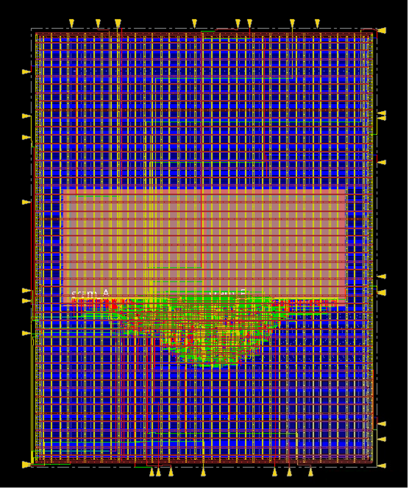
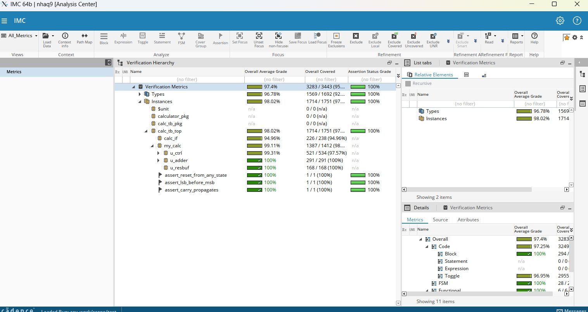

Georgia Tech SiliconJackets | Spring 2026
This report details the design, verification, and physical implementation of a 64-bit unsigned integer calculator, completed between January and March 2026. The project involved the full RTL to GDS silicon design flow, utilizing industry-standard Electronic Design Automation (EDA) tools to transform architectural specifications into a manufacturable, physical layout.
Architectural Design and RTL Development: The primary objective was to design a module that was capable of performing 64-bit addition through the instantiation of 32 bit adders. The design was outlined in SystemVerilog, and verified for synthesizability. The primary arithmetic unit consists of a 32-bit adder (adder32.sv) constructed structurally using 32 full-adder instances connected with generate blocks. This approach was part of the complexity of the onboarding assignment. To handle 64-bit operations, I implemented a Result Buffer (result_buffer.sv) featuring a 64-bit register. This buffer uses a 1-bit select bit to capture the 32-bit adder output into either the upper or lower level, allowing for the specifications to be met. The system was coordinated through an 8 state Finite State Machine (FSM) Controller (controller.sv). This controller sequences the entire operation, initiating SRAM reads for the lower 32 bits of two operands, triggering the first addition, buffering the result, and repeating the process for the upper 32 bits (including carry propagation). Finally, the FSM manages the write-back of the full 64-bit result to a specified SRAM address. The integrated "Chip Top" (top_lvl.sv) connects these modules with a functional SRAM macro, successfully completing 128 full 64-bit additions in only 645 clock cycles.
Functional Verification and Coverage: Verification was performed using Cadence Xcelium for simulation and Cadence SimVision for waveform analysis, which are industry standard tools. A comprehensive testbench was developed to validate the design against a golden reference model. The verification strategy combined directed and constrained randomized testing. Directed cases focused on arithmetic edge conditions, such as 0 + 0, MAX + MAX, and 0 + MAX, ensuring correct overflow and carry out behavior. SystemVerilog Assertions were integrated to monitor internal signal timing, specifically verifying that the carry bit correctly propagated between the two 32-bit addition stages. Using Cadence IMC, the design achieved 99.11% functional coverage, confirming that the logic was robust across the defined input space and FSM states.
Physical Design and Signoff Flow: The transition from RTL to a physical layout was executed through a comprehensive physical design flow using OpenLane and Cadence Innovus. The process began with synthesis in Cadence Genus, mapping the RTL to a gate-level netlist. During Floorplanning, I defined the chip boundary and placed I/O pads and the SRAM macro. Placement followed, where standard cells were arranged to optimize for area and timing. Clock Tree Synthesis (CTS) was a critical phase, where I balanced the clock distribution to over 3 million transistors to minimize skew. Final Routing established the metal interconnects between cells. I conducted Static Timing Analysis (STA) using Cadence Tempus to identify and resolve setup and hold violations, ensuring the design met the targeted clock period. The flow concluded with Signoff, where I resolved all Design Rule Checking (DRC) violations. This stage provided deep familiarity with foundry design rules, metal layer constraints, and Design-for-Manufacturability (DFM) principles, resulting in a validated GDSII file ready for tapeout.

